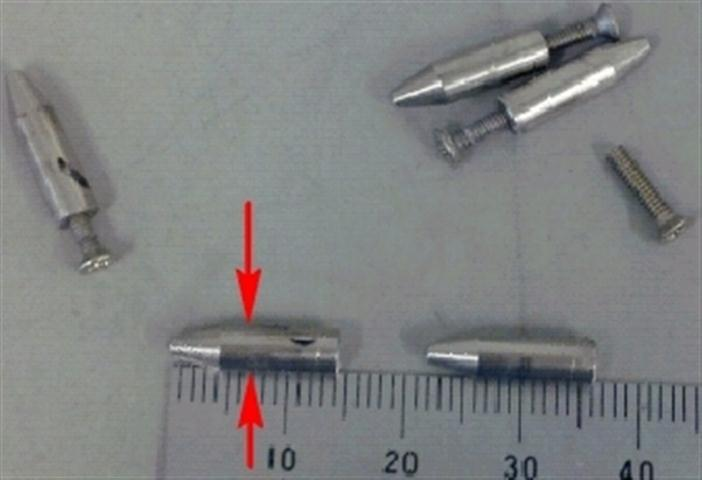

Service History
Subject: NS-7080W Index Arm 1 stuck in socket at 100 Deg C
Handler Model: Xilinx NS-7080W(S/N: 121080; NS7KW-03) MFG Jun 2006
Controller: RC520
Date: 11 Aug 2010
Symptom
Customer informed Index Arm1 stuck in socket for FG484 23x23 Octal at 100DegC during production run, Index Arm2 disabled.
Action
-Layout kit check, contactors, nest and socket guide jig check
-Individual nest fit into the socket guide jig, some pocket cannot fit smoothly, especially for site A & B
-Replaced 7pcs of guide pins on FG484 socket guide jig
-Robot 1 P50 & P51 check, ok. Verified by customer
-Heat up 100DegC, AutoContact Height carried out
-Offline running check with 3 trays of dummy units, ok
-Production monitoring for half an hour
Cause
7 Guide pins on socket guide jig diameter out of specification caused Index Arm 1 stuck in socket.
